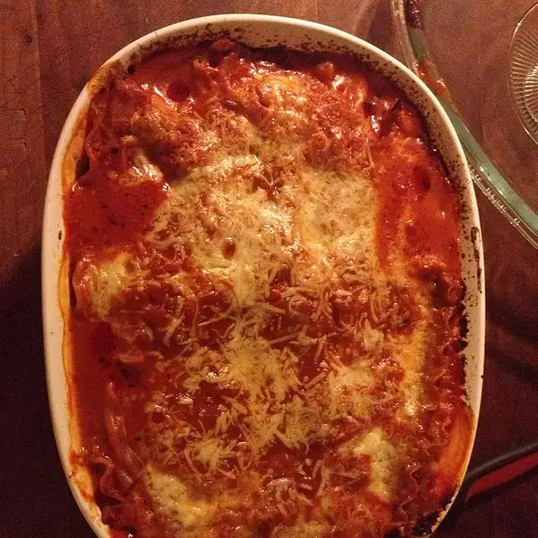

Lasagna

This is our finished product
This is an easy take on an Italian classic.
It's a quick and easy recipe.
The whole family will be satisfied with this dish!
This is my first project on the Odin Project. I am very excited to look at my progress on this journey.
I can't wait to see how far I can go from here.
Ingredients
- 1 (26 Ounce) jar Prego Sauce
- 6 each uncooked lasagna noodles
- 1 (15 ounce) container ricotta cheese
- 2 cups shredded mozarella cheese
- ½ cup grated parmesean cheese
Steps
- Spread about 1 cup pasta sauce in 2-quart shallow baking dish (11x7-inch).
Top with 3 uncooked noodles, ricotta cheese, 1 cup mozzarella cheese, Parmesan cheese and 1 cup pasta sauce.
Top with remaining 3 uncooked noodles and remaining pasta sauce. Cover.
- Bake at 375 degrees F r 1 hour uncovered and topp with remaining mozarella cheese.
Let stand 5 minutes.